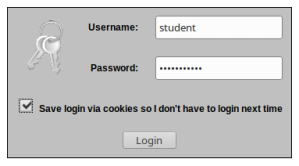
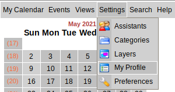
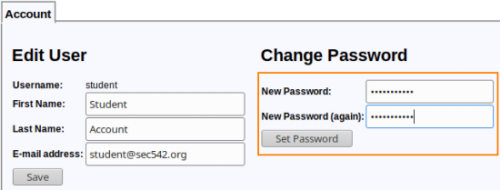
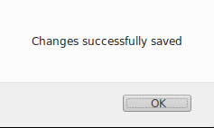
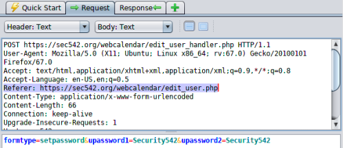
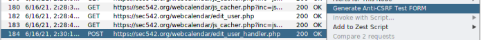
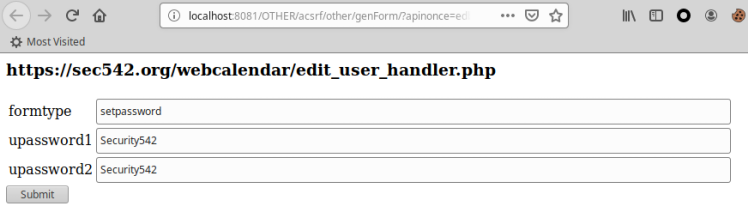
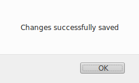
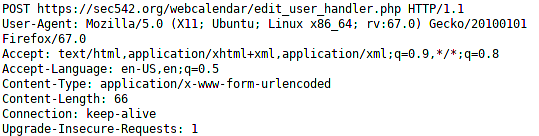

POC: Testing Vulnerability
POC: Trsting Vulnerability
For this test we will use the functionaity of ZAP “Generate Anti CSRF Test FORM” that will create a
POC based on the POST request.
This POC of ZAP will create a webpage that will send a POST request without the
"Referer" header
1. Login to the vulnerable Website
2. Go to Settings → MyProfile
3. Set a new password
 4. In ZAP:Double-click on the POST to
https://example.org/webcalendar/edit_user_handler.php
Then check “Request” to take note of the referer:
Referer: https://example.org/webcalendar/edit_user.php 5. Right-click on the POST and choose "
Generate Anti CSRF Test
FORM"
  Click on Submit
6. This worked because WebCalendar attempts to uses
the HTTP Referer to check that requests are originating fromsame server… However, this can be easily
defeated by just not sending a referer ZAP does not set a referer
via the Anti-CSRF Test Form, and a blank referer also passes WebCalendar's (weak) check.
If fact we can
check that there is not a "Referer" in the POST sent by the Anti-CSRF Test Form
6.